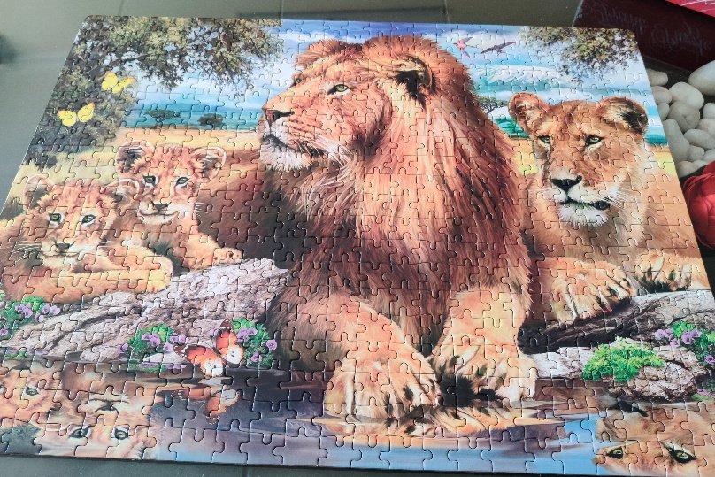
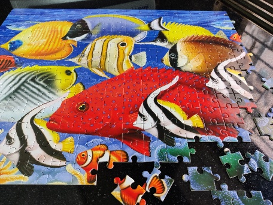
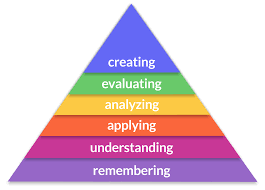
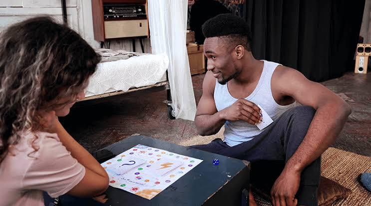
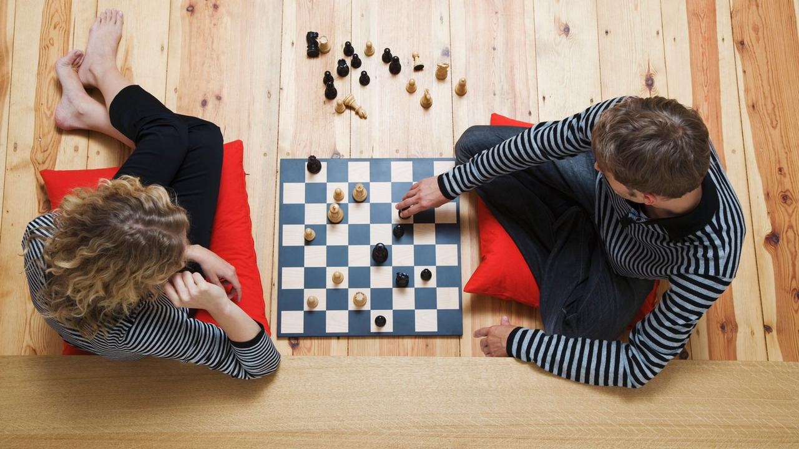
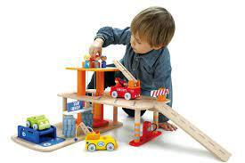
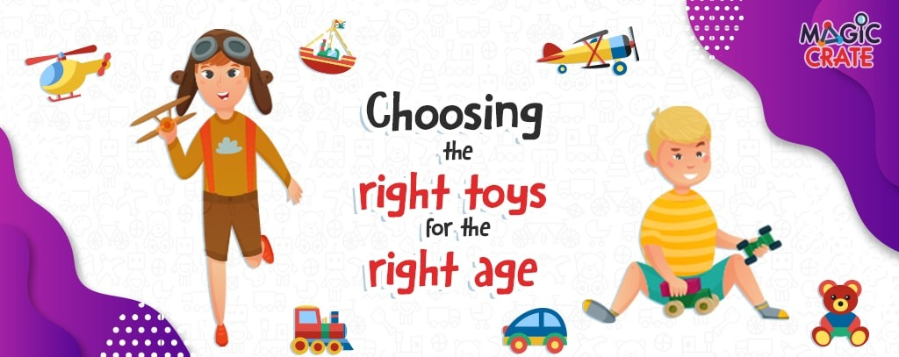
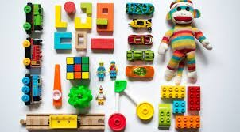

The Jigsaw Fever
If you think, Jigsaw Puzzles are only for kids, then you must read this. I have never been a Jigsaw person as a child, my addiction is only recent. In this article, I am going to share not only my journey, but also the various benefits one can earn by solving Jigsaw Puzzles.
Just a few months back, I bought some Jigsaw puzzles of 250, 500 and 1000 pieces for our annual game programmes. To get a sense of timing, I decided to first solve one before I give it to the kids. The very first one of 250 pieces got me hooked on to it, and the Jigsaw fever started growing on me. Before I could know, I was already an addict. Another design of 250 pieces, then another and another…
Solving the first one of 250 pieces was quite challenging; so before moving on to 500, I solved a few more of 250 and even repeated them. Then one Saturday, after the Jigsaw class with the kids, I dared to begin with the 500 pieces set. It was crazy! One of my friend joined me too, and we both were hooked on to it till 2.00 am, yet it wasn’t complete till the following day.
Next weekend, I again picked up the same 500 pieces set, and timed myself. It took me almost 7 hours to solve it all by myself. Every weekend, I would look forward to solving one set. The next 500 pieces set that I picked up was a tough one and it rolled over to a few days to solve it (putting in some time daily) along with an 8-day tour in between.
Announcement of the Covid lockdown initiated me to start with my 1000 pieces set. This was a tough one dominated by just 2-3 colours. Searching for just the border pieces and completing it took me over an hour. It took me 6 days to complete the whole thing even after pouring in 3-4 hours daily, at times more, finally resulting in a great sense of achievement.


Bloom's Taxonomy Part 1
Bloom's Taxonomy is a hierarchical model used to classify the Educational Learning Objectives. It is an important theory considered while planning the curriculum. It covers three domains – Cognitive, Affective and Psychomotor Domains. Each of these domains have their hierarchies that defines the stages one passes through while learning something.
In this article, I am going to talk about the Cognitive Domain and how games play a role in each of the levels of Cognitive Domain, and how is Game Therapy used to empower one’s learning.
The Cognitive domain has six hierarchical levels. Let us understand each level, and what kind of games can be useful to stimulate them. The first level is to ‘Remember’, which is given the highest importance in our current education system. Most of the examinations require this level to be achieved. Thus, for academic success, the first step it to have a good working memory.
Most of us have a good long-term memory, but working memory is different than long term memory. There is a big range of games that can enhance our working memory. However, I would talk about my top 5 favourite games that I feel are really effective in improving the memory skills.
Brain Cache, a Card Game: (For all ages (above 7), including senior citizens) Launched towards the end of November 2019, designed by a creative bunch of people including a Neuro-Scientist, this game includes many scientific elements to make it effective to aid the memory function of the brain. Brain Cache is a fun card game that can be played Solo or 2 to 11 players. It has memory cards to be memorised fast and effectively, followed by Question Cards that test the memory. You need finish all your cards first to win the game.
Face Tag, a Board Game: (For all ages above 8 years) Face Tag is a 2 to 4 players board game play that involves one to remember faces, their names and cities that you assign to them for that board. The better your memory and recall, the faster you can pass thru’ the board and win the Game. It’s again a new launch in 2020, designed by an innovative person, and a game of my Like.
Jigsaw Puzzles: Though many people do not realise, or directly relate a jigsaw puzzle to memory, I can assure that the working memory is highly exercised in solving bigger Jigsaw puzzles. Being an absolute lover of Jigsaw puzzles and having solved multiple 500 and 1000 pieces puzzles, I have experienced the need to use visual memory, visual observation and recall skills, and highly recommend playing of Jigsaw puzzles to children as well as children.


Caterpillar Clutter: (Game for Kids above 4 years) This is a speedy memory game for younger children. This game requires children to pay attention to the character shoes, remember the pattern and find it in same design, or in the dark (shadow objects). It is a fun way with a story board to involve the kids, and stimulate their working memory.
Seas The Day Card Game: It is a single player to two-player memory game with a little strategy for children and adults. This game has beautifully designed cards which are so appealing to the eyes. It is a fun game of matching and learning for kids, and enhances the visual memory and observation. Game variations allow the older ones to get engaged.
Bloom's Taxonomy Part 2
In my first article, I talked about the first level of the Cognitive Domain and also mentioned my top 5 favourite games to boost the Memory and Recall. Continuing with the second level, it is all about 'understanding' & 'comprehension'.
Once we receive some information, we should be able to comprehend or understand it. This means we must be able to fit it in various context, or able to relate to it with regards to different situations or concepts. It also means that if we understand, we should be able to explain it to others.
Simply memorizing content doesn’t help, comprehending is equally important and thus we have the application-based questions in our examinations. We can start training children early to develop these skills. There are games that help build these skills in usin various ways, and many games can be played at any age. Also, these skills can be developed or boosted at any age.
Usually any games that involve following a set of instructions, or require one to make connections are the most effective in developing comprehending skills. Let us see some such games. Some of the games that I am about to mention are also used in our Corporate or B-Schools sessions.
Logika: (a single player tabletop game) Logika is a game of logical deduction, that also works on improving the Reading Comprehension. It has 100 challenges to be solved and can be played by anyone adult, or child above 7 years of age. This game would also fall in the upper levels that require Higher Order Thinking Skills.
Guessing Junior/Senior: (Party Game) Guessing Junior or Senior are both excellent group games that help one build connections and think fast to be able to explain the terms given on the cards for their team to guess it. These are Indian versions of the well-known game Taboo.
Why Connect: (Card-laying Board Game) Why Connect is a beautiful 2 to 4 player card laying game where you need to create associations or connect the pictures with your own understanding, This game also overlaps with a higher level skill of this hierarchy of Bloom’s Taxonomy. Though the game board mentions the age 6 to 12 years, I would equally recommend it for adults too.
What’s Yours Like: (Party Game) This game involves the players to come up with clever, witty and outrageous clues. The players need to describe the word as per the card drawn; descriptions have to be truthful, yet clever so the person in the hot seat doesn’t get an easy guess. This game can become super fun and hilarious.
Sort In the Box: (A knowledge classification game for preschoolers) To begin early, this is a game that develops the comprehending ability in the kindergartners. It is a sorting activity where kids need to drop the appropriate ones from mixed-up tiles in to the sorting box.
With this we complete the first two levels of the Cognitive Domain of the Bloom’s Taxonomy. Both level one and two are considered the Lower Order Thinking Skills (LOTS) which are important foundation for one to be able to develop the Higher Order Thinking Skills (HOTS). My next levels shall talk about the next four levels and games that help develop these Higher Order Thinking Skills.
Happy Gaming...
Bloom's Taxonomy Part 3
Bloom’s Taxonomy Level 1 and 2 are about developing the Lower Order Thinking Skills (LOTS), and thereafter levels 3 to 6 are about developing the Higher Order Thinking Skills (HOTS). Usually all kids easily acquire LOTS through school education, but different kids may be at different levels of HOTS depending on the environment and exposure they have received. To develop these HOT skills, one needs to be exposed to various application-based processes.
Games naturally provide the application aspect and that too in a safe environment, depending on the selection of the games. We find hundreds of games that exercise one’s different types of Thinking abilities.
The third level of Bloom’s Taxonomy is about developing the sense to ‘Apply’. This means one's ability to apply the acquired knowledge in real life, to be able to use one’s knowledge in real life situation. We would be coming across various such situations in daily life where we can see our ability to apply the acquired knowledge. For example, learning numerical operations and applying it when shopping the groceries, learning new vocabulary and applying in our daily life, learning about Science phenomena and apply it in situations in our life.
I can immediately think of the movie ‘3 idiots’ where the lead character Rancho is an extra-ordinary student and shown to apply the basics of Science to his daily life.
For an easy connect of games to the academic success that requires
this level of thinking, I shall put
all DIY type of games under this category. We find games on Science
Experiments, or creating
Robotic devices, solar devices, or Mathematical board games that
require hands-on activity, and
thus ‘Apply’ the knowledge.
Here are some of the many games.
Nature Science: A Game kit to provides with material to do various experiments out in the nature and apply the book knowledge in real life.
Magic Tricks: Magic Tricks are best example to show the application of Physics or Chemistry or Mathematics in our life. Various tricks allow one to apply different knowledge or combination of subjects to facilitate the tricks.
Mystic Arts: A card game from Luma World that I really enjoyed playing, which requires one to apply the parameters of measurement while playing the game. Though it is a team game and doesn’t really talk of the theory of Measurements, yet the Game Play automatically makes you convert & calculate the measurements of Volume, Mass and Distance.
Galaxy Riders: Galaxy Riders is a board game that beautifully makes you apply the numerical operations of addition, subtraction, multiplication and division. It is a game that can be played by children above 8 years of age, but equally fun for adults. Along with the speedy application of numerical operations, this game also requires strategic calculations to be able to acquire the planets.
Laser Maze: This Think Fun game is one from the series which requires one to apply principles of different Physics concepts. It has 60 challenges where you need to apply principles of light travel and reflection to be able to solve each. The others in series are Circuit Maze, Gravitation Maze etc.
Coming up in my next article the Level 4 ‘Analyse’ and games that boost the corresponding skills. Till then, Happy Gaming...
Bloom's Taxonomy Part 4
The ability to ‘Analyse’ reserves its place on the fourth level, starting the higher half of the Cognitive domain of the Bloom’s Taxonomy. This basically refers to one's ability to think deeper into things already known; to be able to relate and compare. This happens only when your understanding on a topic is real and deep enough.
Analysis is an important life skill to be able to face real life situations. Most children achieve this stage in school education, though not all. The next two levels are not achieved by many kids in our School Educational system.
When you face a situation, and you are able to come to a Logical Deduction on what to do and what not to do, you are able to compare various options, you are able to analyze the situation and take a decision, that's when you are said to arrive at this stage. Being able to associate various things, concepts or experiences is the key element.
Once a child reaches this level, he / she is able to categorise things, compare and contrast between two different things, able to distinguish, infer or illustrate things.
One favourite game of mine that I can immediately relate to is
Codenames. I shall list down a few
more, and some games may overlap with some games listed in previous
levels too.
Games that help develop this level of Bloom’s Taxonomy
Codenames: Codenames was once entitled the Number 1 party game, and having played this game, I can vouch for it. It is a super fun game, and more of a group game. It is about the ability to associate different words under matching categories, and give hints for the team members to be able to guess the words chosen.
Pictionary: An age-old classic game, Pictionary is about drawing the clues for the team to recognize the clue word. It is a nice family game or a group game. This game requires and develops the ability of being able to infer or associate and project through a drawing that others can connect with.
Dixit: Dixit, a well-known board game with excellent art-work story cards. Each card tells some story. The game play is about associating one of your cards to a given theme or story, and then voting for the cards on display. The more people that can associate a card to the given theme, the higher the chance of winning for the card owner.
Last Letter: (A fun and creative Card Game) A card game by the Think Fun company which requires one to think creatively and associate the picture cards to a situation or a story. From a variety of colourful picture cards, we need to think of a name that begins with the last letter of the previous card. This truly exercises our mind, and strengthens our ability of association and analysis.
Why Connect: (Card-laying Board Game) Why Connect is a beautiful 2 to 4 player card laying game where you need to create associations or connect the pictures with your own understanding, This game also overlaps with a higher level skill of this hierarchy of Bloom’s Taxonomy. Though the game board mentions the age 6 to 12 years, I would equally recommend it for adults too.
Next two levels are more about the process rather than the games
themselves. Covering both levels
in my next article.
_Happy Gaming_
Bloom's Taxonomy Part 5
The levels on the top of the hierarchy of Cognitive Domain of Bloom’s Taxonomy are about Evaluation and Creation.
Talking about each level, the fifth level of Evaluation defines the ability to look through the facts, analyze them and judge or opine about something or a situation.
To be able to Evaluate, one needs to have a strong foundation of all the levels below. Most often, our system has conditioned the children to NOT question and ONLY follow, which kills their curiosity and thus the ability to argue, oppose or think beyond. We are often so conditioned to ACCEPT things as they are, that we lose (or NOT develop) the ability to Evaluate / Reflect.
Amongst the children that I meet and interact with, mostly I see their ability to reflect and review is very low. So, at Khel Khel Mein, one of our most important ritual is the Review Circle - to reflect on all that we learnt or experienced. Initially very few kids are able to reflect and give their feedback, but over the time, sooner or later, most develop this ability. They are allowed to say whatever they feel, and are not judged whatsoever.
Usually this level is not about a game, but more about the process followed by the facilitator. But one can play games that involve debating or negotiation to improve this ability.
And finally, the skill that sits at the top level of the pyramid is to Create. This refers to one's ability to design or formulate something original on one's own. This requires one to achieve all the previous levels. In order to create something, one has to get a deep understanding, must have the ability to apply the knowledge, and should be able to analyze and evaluate what went wrong and what worked.
Most of the times, last two levels are NOT achieved by many kids for academic subjects; yet there are children at this level in their specific fields of interest. For example, when one is deeply interested in a field of sports or art or music or technology etc., then one goes deep enough to achieve all these 6 levels in that particular field.
Having visited multiple schools pan India from the rural most to the most elite ones, I believe there is a very low percentage overall of children who are able to function on the top two levels during the school days. Rather more tribal or rural kids often can operate from this level, NOT through school education, but owing to the survival needs of their location. They are nearly independent from very young age to create things, and meet their daily needs of life.
In urban and metro cities, very few schools have innovative and appropriate methods to allow the children to blossom to these two levels. These levels are NOT about the topic or tool like a game, but about the process, the way one conducts the games or any teaching-learning process.
Being a Psychologist and an Experiential Educator, these are the most important aspects I keep in mind while designing the games curriculum for children. The annual programmes at Khel Khel Mein are designed so as to achieve these two levels by the kids in their Thinking process, along with our focus on their socio-emotional development.
Giving the right environment at home, not giving answers to difficult challenges, allowing the child their own time and space to solve the games - these are some important keys to allow your child to bloom.
Hope you enjoyed reading all the five articles on Bloom’s Taxonomy and found them useful. Do read our other articles for more information on Game Therapy. Happy Gaming bloom.
Couples’ Game Therapy
Couples Game Therapy is different from Couples Therapy. Couples Therapy or Couple Counselling is basically working on difficulties or emotional challenges within a couple by a professional or psychology expert. Couples Game Therapy (CGT) is more preventive and empowering than curative. CGT is about building rapport between couples, strengthening their bonding and developing deeper levels of intimacy.
In the earlier stage of the relationship (newly weds), it is normal to be shy or reserved, especially if the courtship period has been short. One is likely to be little formal or would do things to please the partner without being able to easily reveal self-preferences. For such times, Games are excellent ice-breakers. Games are a fun way to get to know each other better, get comfortable with each other, know about each other’s strengths and weakness and strengthen the new bond. Once the comfort comes in, the couple starts feeling more secured with each other.
Games are also beneficial for those who married for years. They bring more fun and spice in one’s life, and reward with laughter and love. Games bring a new spark in the relationship, and help build new memories or recall old ones. Whether one is married for 10 years or 10 months, there is always something to be discovered about each other. Communication games or Conversational games are great to re-discover each other.
For couples facing difficulties in the relationship, and feeling the magic and the charm of the relationship is lost, Games may come in as a boon. Making a relationship work may be tough, and is a serious task, but can get resolved with fun. To begin with, they need to choose games based on their preferences - what they would enjoy the most. The fun and subconscious element of games would help repair the relationship and bring back the spark.
Here are some games that can be played by every couple, irrespective of which stage of relationship they are in – whether newlyweds or married since years.
Two Truths One Lie: Even if you are married since many years, you will always have something new to discover about your partner, and something new to share. You could go on a date night and play this game at a special dinner time. As the name suggests, you have to make 3 statements – 2 true statements and 1 false statement about yourself (in any order). Your partner must guess which one is the lie amongst the facts. Play this turn by turn. You could talk about your childhood facts, your likes and preferences that probably are not know to your partner, about some silly acts you may have done or mistakes that make you laugh. This game can really become fun and can surprise you!
Alibaba’s Magic Lamp: This game can be a healing game to those who have been married for years and feel the communication levels between them and their spouse has comparatively got low. It will help get more sensitive and supporting towards each other, and help know those desires or difficulties of the partner which may not be probably shared on a daily life. For those in new relationship, it will just help you discover your partner better, it can be more fun and connecting. This game will help explore the future they would like to build as a couple or individually. If you have not been playing games, do not make it formal game play, it may sound awkward to start. Just begin as a conversation. Here’s about the game.
Drinking Roulette: A classic well-known game but really fun. All you need is either the Drinking Roulette game or two glasses and some drinks. Not necessary to have alcohol, it can be any drinks of your preference. Rule of the game is that one person will ask a Yes or No question to the partner, and other has to answer – if the answer is ‘yes’ – take a sip from the big glass (or drink one shot glass of the roulette). If the answer is no, then you don’t drink. You can bring your own twists to the game. If at home or a holiday, you can make it kinky and naughty too, by asking sex related questions, where if your answer is yes, you have to perform it.


Look into each other’s eyes: The age-old magic recipe that works for sure and is highly therapeutic. Yes, just look into each other’s eyes for at least 3 to 5 minutes. Move so close to each other that the knees are nearly touching. If required, play your favourite song in the background and keep looking at each other till the song is over. This is not a blinking game, where you are not allowed to blink. You may surely blink, but continue looking into each other’s eyes. Just as simple as it sounds, it is an intense exercise. It has a huge impact on the connectedness, and you will clearly see the magic work on you once you start this. If your partner is not the kind who will like to play this game, just fix your eyes on your partner’s. Don’t say anything, just keep looking. Let the magic work for you both!
Talk Five: A quick game that you can play whenever you are together. Come up with a theme each time you play this game, and list 5 things within the theme. For example, “Things I like about you”, “Things I am scared of”, “Things I am grateful for” “Things I wanna do with you this week”. You could alternate saying it one by one, or say all five in one-go. Good idea would be to make a small jar and make various small chits listing different themes. Each time you want to play, just pick one chit from the jar. Be creative, you could get silly at times, be honest! Once you are done, appreciate each other, hug each other, and ask follow up questions if required, come up with new themes together. Hope you liked these games and will try out soon. Feel excited about more such games, join our Annual Couple Therapy program, where we will make you play some bonding games through online session, and also send you various game ideas and bonding tips every month.
How to Enhance Thinking Skills
In today’s global & rapidly-changing world, children need to be able to do much more than repeat a list of facts. They need to be critical thinkers who can make sense of information, analyze, compare, argue, contest, make inferences and generate higher order thinking skills. ‘How do we engage them with critical thinking activities’ is a big question for most of us. Critical thinking can be fostered by allowing various small little activities to be accomplished by the children. Here are some tips.
Start Early! Experimenting how things work is crucial for critical thinking. Play allows one to explore ‘cause and effect’. Provide indoor and outdoor space for playing, along with pretend play. This would give them opportunities to try things and see reactions. When you give them a task, give them time to think, plan, attempt and complete or let them even fail at it. Just observe without further instructions or corrections. It’s not easy, silently count 60 in your mind, thus giving child a chance to reflect rather than react. At times, you may have to wait longer. How much ever tempting it may be, do not complete the task by yourself.
Another way is to ask open-ended questions when the child is curious. Rather than directly answering to a query, ask back, “What do you think about it?” Give opportunities to think of possibilities. Do NOT judge his/her responses. Respect what the child says! You may further probe and ask for more details. This will develop the ability and confidence in the child to think and believe in self.
As a parent, you may always have situations where you want to step in. But holding back, and allowing the child to complete a task or allowing the child to react to a situation is the key to developing his/her thinking skills. Besides, we can also use PLAY to enhance thinking skills. There are various games and toys that develop thinking skills in kids or adults. Play allows exploring ‘cause and effect’.
One commonly known play for thinking skills is Puzzles. There are various types of puzzles available – jigsaw puzzle, lateral thinking metal puzzles, visual puzzles etc. Puzzles of all types allow one to explore by trying multiple moves and ways in order to reach the solution. Provide different types of puzzles, not just the jigsaw puzzles. Each type will develop a different type of thinking ability.
Another important play, not often taken seriously, is Pretend Play. Children pretending different roles such as mother, father, doctor, teacher, entrepreneur etc. are able to explore and understand different roles. Pretend Play allows them to experiment. At times, it also allows venting out, or reveal if something is going wrong in child’s life, or about others’ behaviours towards the child.
Many Board Games teach social skills and social behaviour along with developing the ability to plan or take decisions at various points. Social skills are also a critical in developing thinking skills. The ability to think before reacting, to accept others, to accept failure, to speak in front of others – all this requires a level of processing within the brain.

All these methods provide practice and experience to the child in a more controlled and safer environment. Create a culture of playing games. Because, when children are regularly exposed to different forms of play, they get opportunities to develop the neuro-pathways that enhance their thinking skills. Avoid excess digital games though!
Selection of Toys and Games for your child
Toys and Games play a very important role in the growth and development of a child. They are not JUST for the fun sake, but there are many other functions performed by a toy. Thus, be aware of where are you investing your money and where are you investing the child’s important learning time.
Functions of a toy: Toys are generally the tools of play, especially designed for its use. Play is an important process in the overall development of the child and lays a foundation in building an integrated personality. Owing to serving the function of play, toys have an educative value. Right from a simple toy as a doll or a car to the complex strategic games, every toy has an educative value. Toys enhance cognitive behaviour and stimulate creativity. They aid in the physical and mental skills necessary for later life. Different toys will have different set of functions. So, in general, the function of toys is to provide as a tool for play, leading to the overall development of an individual.
Physical Quality of a toy: Toys are made of various material including wood, metal, plastic, paper, cloth etc. One important factor is that toys must be made from hazard-free material and must follow the safety standards. When buying toys for very young children, remember that the child is likely to put the toy in mouth. So, avoid buying toys with very small parts or those not checked for safety standards. Also look for sharp edges in any toys as they could cause injuries.
Age Factor: Select a toy which is appropriate for the child’s age. At times, some kids younger than the recommended age also may be able to solve, where as some older kids not exposed to a certain set of toys may take a while to pick up on the mechanism. There are certain toys which are ageless – meaning any age individuals can use it for play. Usually by 8, children are ready to solve the most complex puzzles. In our class we provide them with all puzzles that can be challenging for an adult too.
Here are some games that can be played by every couple, irrespective of which stage of relationship they are in – whether newlyweds or married since years.
Game Play Time: Most games have the play time mentioned on the board. Select a game with a play time that you think would suit your child or family time. At times, some boards take 45 mins to 1 hour, and if the child is not used to sitting for long, then the child may get discouraged to play any such game. Also considering their study pressure, the game may be lying in the cupboard if one is not able to find so much time. It’s good to push the child beyond his current capability, but don’t be too ambitious. Go step by step. Don’t jump from 5 minutes Game Play to directly a long game. Also have a mix of all types of games – quick ones and long ones, so child may get the choice as per the time available.


Psychological Learning: Look for the psychological effects that the toy may have on your child. You could ask simple questions to yourself to make a better choice. Does the toy promote creativity? Is the toy constructive or destructive? (many destructive toys cause adverse effects on the emotional health or behaviour of the child) Is the toy allow open-ended play? Is it teaching some skill, or is just a pass time play? Can it create communication and bonding with others?
Value for Money: Last but not the least, do you find value in the toy you are purchasing? Sometimes there are toys which are way too expensive for the learning or the real value they give in return. How frequently will that toy be used, what function is it serving, is the idea or material really worth the price – think over all these factors when you purchase the next toy!
Also check for the game reviews on my YouTube channel or review blogs on my website. Subscribe our channel for more videos on Games and Game Therapy.